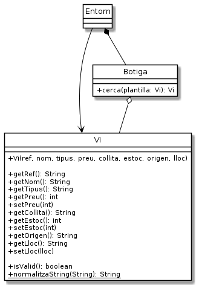

Exercici 05_05. El Vi ampliat¶
Exercici 05_05. El Vi ampliat¶
Context
Carpeta de lliurament:
05_05_vi_ampliat/Continguts relacionats: Vins complets
Com lliurar-lo: instruccions
[✓] Exercici amb autoavaluació
Enunciat
Després de la reunió, hem trobat què necessitem gestionar les següents característiques dels vins:

N’hi moltes més característiques, algunes tan importants com el celler i la varietat de raïm, però la nostra clienta ha prioritzat temps a completesa. «Si ho continueu fent tan bé», ens diu amb la seva rialleta astuta, la Sra. Estrella, «ja me les afegireu més endavant».
Hem copiat alguns exemples de vins per tenir dades reals per a fer proves:
ref |
nom |
tipus |
preu |
collita |
estoc |
origen |
lloc |
|---|---|---|---|---|---|---|---|
LLUMALBA20200001 |
Llum d’Alba Blanc |
blanc |
1750 |
2020 |
12 |
Priorat |
P02E03N55D |
CARPATHI20180021 |
Carpathia Negre |
negre |
3450 |
2018 |
6 |
Montsant |
P23E01N43D |
MATISNEG20190011 |
Matís Negre |
negre |
1325 |
2019 |
12 |
Pla del Bages |
P20E01N12E |
SAOROSAT20180001 |
Saó Rosat |
rosat |
1040 |
2018 |
24 |
Costers del Segre |
P02E45N55D |
ROURABLA20200232 |
Roura blanc |
blanc |
606 |
2020 |
32 |
Alella |
P21E45N55E |
ROURABLA20200201 |
Roura blanc |
blanc |
906 |
2018 |
3 |
Alella |
P21E45N55E |
CERCIUMX20170002 |
Cercium |
negre |
565 |
2017 |
30 |
Empordà |
P23E01N55D |
MASIASER20200001 |
Masia Serra |
negre |
1350 |
2020 |
12 |
Empordà |
P02E02N55E |
Segons ens explica la Sra. Estrella, la referència és única per cada vi. Ella té una codificació particular que forma amb part del nom del vi, l’anyada (o collita) i un valor seqüencial. De moment ens ha dit que no ens hem de preocupar gaire de com està format. La impressió és que donar-los nom és una tasca que li agrada força i no ens la voldrà fer automatitzar de moment.
La localització de les ampolles és també un misteri. No ens sorprèn que la nostra clienta comenci a tenir dificultats per recordar on deixa les ampolles. El seu magatzem és un intricat laberint ple de passadissos, estants i nivells. La Sra. Estrella els assigna un lloc a les ampolles a mida que li arriben, normalment allà on hi trobava espai, i la seva antiga memòria prodigiosa li permetia recordar on es trobaven. Ara el Tomet serà l’encarregat de registrar a l’aplicació que estem fent el lloc on deixa els diferents vins, de manera que una consulta ràpida a l’aplicació permetrà la Sra. Estrella localitzar cada ampolla.
Per altra banda tenim una sèrie de valors nous que de moment codificarem com a String, fins i tot la collita, doncs, malgrat és un any i podria ser interpretat com a enter, no sembla que hàgim d’aprofitar les propietats d’un enter i pensem que ens resultarà més fàcil gestionar-la com String.
Els valors de tipus String no poden ser mai null ni buits ni estar
formats només per espais.
Així, només tindrem les propietats preu i estoc com a valors
enters.
Quan creem un vi amb algun valor no adequat, el mètode esValid() ens
retornarà false. Això ens permetrà descartar-lo. La classe Botiga
no acceptarà afegir vins que no siguin vàlids.
Els constructors de Vi¶
A la versió anterior disposàvem de dos constructors. Un d’ells ens permetia no haver d’especificar l’estoc. Malgrat aquella semblava una bona decisió, ara que tenim tantes propietats a inicialitzar, la complexitat d’oferir constructors parcials es fa inabordable. Així que deixarem un únic constructor amb tots els atributs.
Normalització dels valors de tipus String¶
El mètode Vi.normalitzaNom() ara no ens acaba de anar bé tal i com el
teníem. En concret, ja no només normalitzarà noms sinó també d’altres
Strings. Per aquesta raó ens caldrà que:
En comptes de
normalitzaNom()li reanomenarem comnormalitzaString().Donat que una instància de
Vies pot fer servir com a plantilla, ara els atributs de tipus Strings han de poder acceptar la cadena buida que simbolitzarà qualsevol valor. El nou mètodenormalitzaString()acceptarà així el valornulli també la cadena buida o només formada per espais en blanc. Tots tres casos es retornaran com a cadena buida.El missatge de valor per defecte (
nom no vàlid) deixa de tenir sentit.
Persistència i toString()¶
Ens tocarà també modificar els mètodes de Vi, deArrayString() i
aArrayString() de manera que es considerin totes les noves
característiques d’un vi.
En el cas de deArrayString(), quan l’entrada no disposi exactament del
nombre d’elements necessaris per crear un vi, o bé algun d’aquests
elements no sigui vàlid per l’atribut que li correspon, retornarà null.
Tot i que podríem escollir qualsevol ordre per les propietats, les guardarem de la següent manera per poder passar les proves que hem preparat: referència, nom, tipus, preu, collita, estoc, denominació d’origen i lloc.
També ens caldrà modificar toString() si volem continuar utilitzant-lo
per mostrar totes les propietats del vi.
La classe Botiga¶
La classe Botiga també es veurà transformada:
l’antic mètode
cerca(String)que abans cercava per nom del vi, ara desapareix.apareix un nou mètode
cerca(Vi)que rep una instància deVi, pel que probablementesValid()retornaràfalse. Aquesta instància ens servirà de plantilla per poder trobar el vi que ens interessa. En cas que no trobi cap vi que coincideixi amb la plantilla, retornarànull. Altrament retornarà el primer que trobi que coincideixi.
La cerca de vi¶
Per permetre molta flexibilitat a l’hora de cercar un vi, se’ns ha ocorregut que la millor manera és passar-li al cercador una plantilla de vi amb les especificacions d’allò que cerquem. I què millor plantilla que un altre vi?
La idea bàsica és que construirem una instància de Vi que tindrà
especificats els valors de les característiques del vi que cerquem, mentre
que si una característica no ens importa, la deixarem sense especificar.
Per exemple, si volem cercar per nom com fins ara, només haurem de definir el nom a la plantilla i la resta de característiques les posarem amb un valor que indiqui d’alguna manera que no està especificat.
En concret:
els valors de tipus string que no ens interessi especificar els marcarem amb cadena buida.
el preu de la plantilla serà considerat com a preu màxim. Si el deixem com a -1 es considerarà qualsevol preu, fins i tot 0. Altrament, es considerarà només els vins que tinguin un preu menor o igual a l’indicat.
l’estoc de la plantilla es considerarà com a estoc mínim. Si el deixem com a -1 es considerarà qualsevol estoc, fins i tot 0. Altrament, només es considerarà vins que tinguin com a mínim l’estoc indicat.
en cas que un valor de tipus String no sigui buit a la plantilla, haurà de coincidir amb el valor del vi a seleccionar. No distingirà majúscules i minúscules. La comparació es realitzarà amb Strings normalitzats.
Sabem que cercar alguns valors de text exactament pot arribar a ser molt incòmode. De moment, però, mantindrem aquesta simplificació i més endavant, si cal, mirarem d’arreglar-ho.
Entorn: afegir, modificar i eliminar¶
Tot i que li ha agradat molt a la Sra. Estrella, les opcions d’afegir,
modificar i eliminar des de l’entorn, considera que no són tan importants
com la de cerca. Se n’ha adonat que si edita el fitxer botiga.csv pot
fer les modificacions que li vinguin de gust i, fins i tot, vincular-ho
amb el seu full de càlcul. S’estima més que dediquem ara el temps a la
cerca, i que ja més endavant en parlarem si li calen aquestes opcions.
Així que, de moment, traurem les opcions d’afegir, modificar i eliminar de
Entorn.
Entorn: cercar¶
En el cas de la cerca, l’aproximació que prenem és la següent:
En rebre la comanda "cerca" l’entorn començarà a demanar valors per
cada propietat. En cas que s’introdueixi una línia buida, es suposarà que
no es vol especificar la propietat. En cas que s’introdueixi com a valor
l’exclamació, s’entendrà que ja no es vol especificar cap altra propietat.
Així, la resta de propietats quedaran inicialitzades als valors no
especificats explicats abans.
Ara ja no es podrà cancel·lar la cerca. La Sra. Estrella només podrà posar
! perquè no demani més valors, i ignorar el vi que es es trobi.
Amb les dades introduïdes es construeix una instància de Vi
que serà utilitzada com a plantilla per la cerca.
En cas que no s’especifiqui cap valor a la plantilla, és clar, s’estarà demanant el primer vi que es trobi.
Per exemple, si es vol trobar el vi amb una certa referència, s’introduirà així:
botiga> cerca
Enter deixa sense especificar. ! finalitza la plantilla.
ref> ROURABLA20200232
nom> !
Trobat:
ref: ROURABLA20200232
nom: Roura blanc
tipus: blanc
preu: 606
collita: 2020
estoc: 32
D.O.: Alella
lloc: P21E45N55E
botiga>
En canvi, si volem indicar només el nom i l’anyada, farem
botiga> cerca
Enter deixa sense especificar. ! finalitza la plantilla.
ref>
nom> Roura blanc
tipus>
preu max.>
collita> 2020
estoc min.> !
Trobat:
ref: ROURABLA20200232
nom: Roura blanc
tipus: blanc
preu: 606
collita: 2020
estoc: 32
D.O.: Alella
lloc: P21E45N55E
botiga>
Fixa’t que l’ordre de les propietats ha de ser: referència, nom, tipus, preu, collita, estoc, denominació d’origen i lloc.
Què haig de fer?¶
Implementa aquests canvis de manera que la nostra clienta pugui fer cerques útils.
Considera la llista de coses a fer:
modifica la classe
Viperquè tingui els nous atributs. Això inclou constructors i accessors.afegeix el mètode
esValid()aVide manera que es pugui saber si una instància té valors vàlids per totes les propietats.modifica la classe
Viperquè accepti els valorsnulli-1i així permetre que es pugui fer servir una instància deVicom a plantilla d’una cerca.modifica els mètodes
aArrayString()ideArrayString()perquè tinguin en consideració els nous atributs.modifica el mètode
cerca()deBotigade manera que cerqui a partir d’una plantilla.
No està malament, oi? Doncs a treballar!
Addicionalment, tingues present que les opcions afegir, modificar i
eliminar de Entorn han estat eliminades d’aquest exercici només
per reduir la càrrega de treball. Si et veus amb ganes i temps, però, pot
resultar molt interessant realitzar-les doncs aprendràs a enfrontar-te a
una molt típica situació d’escriure còdi molt similar però no idèntic.
Els jocs de prova de l’exercici ignoraran aquestes opcions.
Pista¶
Va, vinga, una empenteta si estàs tenint problemes amb com filtrar els vins:
1 2 3 4 5 6 7 8 9 10 11 12 | public Vi cerca(Vi plantilla) {
for (Vi vi: vins) {
if (vi == null) continue;
if (! plantilla.getRef().isEmpty() && ! plantilla.getRef().equalsIgnoreCase(vi.getRef())) continue;
if (! plantilla.getNom().isEmpty() && ! plantilla.getNom().equalsIgnoreCase(vi.getNom())) continue;
if (! plantilla.getTipus().isEmpty() && ! plantilla.getTipus().equalsIgnoreCase(vi.getTipus())) continue;
if (plantilla.getPreu() >= 0 && plantilla.getPreu() < vi.getPreu()) continue;
// No, no t'he donat tot el codi ;)
return vi;
}
return null;
}
|